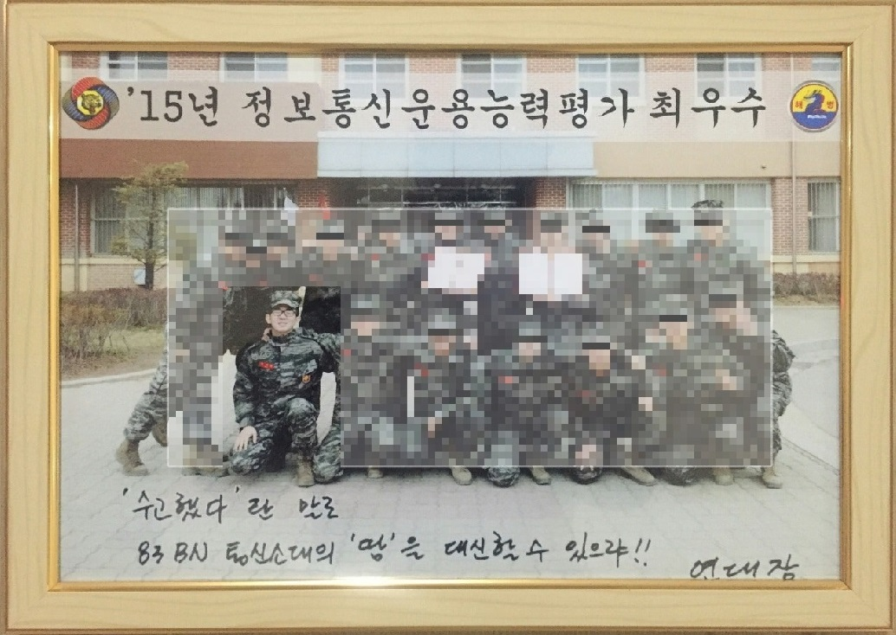

2026 [Current]
INSERT INTO uni_life VALUES (Work: ('Teaching Assistant', 'at Stats Department'), 'Research Assistant', 'AI trainer',
Achievement: 'Distinguished Graduate Award');2025
INSERT INTO uni_life VALUES (Leadership: 'Uniguide', 'Science Scholar');
2024
CREATE TABLE uni_life (student_id STRING PRIMARY KEY, uni VARCHAR(255), deg VARCHAR(255));
INSERT INTO uni_life VALUES ('jhan436', 'University of Auckland', 'Data Science');
INSERT INTO uni_life VALUES (Leadership: 'Science Ambassador');

2023
404 - Page Not Found
2022
CREATE TABLE stock_market (id INT PRIMARY KEY, symbol VARCHAR(255), profit DECIMAL(10, 2));
2021
CREATE TABLE aged_care (client_id INT PRIMARY KEY, specialisation VARCHAR(255), certificate VARCHAR(255));
2020
DROP TABLE hotel_chef;
2019
INSERT INTO hotel_chef VALUES ('Cordis Hotel', 'high tea', 'cold_section');
2018
CREATE TABLE hotel_chef (hotel_name VARCHAR(255), department_1 VARCHAR(255), department_2 VARCHAR(255));
INSERT INTO hotel_chef VALUES ('Sky City', 'MASU', 'Convention Centre');
2017
CREATE TABLE cooking (id INT PRIMARY KEY, western_dishes VARCHAR(255));
NEW SKILL: Cooking
2016
[REDACTED] Historical data unavailable due to high-security clearance.
DROP TABLE marine_corps;

2015
[REDACTED] Historical data unavailable due to high-security clearance.
2014
[REDACTED] Historical data unavailable due to high-security clearance.
CREATE TABLE marine_corps (dog_tag INT PRIMARY KEY, blood_type VARCHAR(255), department VARCHAR(255), position VARCHAR(255), fire_arm VARCHAR(255));
INSERT INTO marine_corps VALUES (14-72005571, 'B+', '2nd Division 8th Infantry Regiment', 'Signalman', 'K1 carbine');
> data_lost
ERR_CORRUPTED_SECTOR_0x0F001
01001101 01100101 01101101 01101111 01110010 01111001 01100110 01100001 01110101 01101100 01110100
!#@%*(&^&$!(#... UNABLE_TO_READ_PRIOR_TO_2014.
[ABORT_PROCESS]